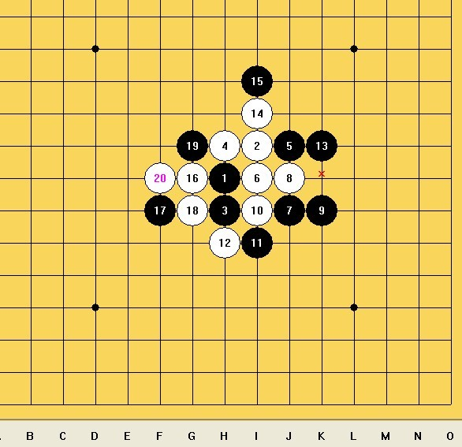

记2011年第八届浙江省五子棋公开赛(下)
#1 记2011年第八届浙江省五子棋公开赛(下)作者：四川连珠魂 发表时间：2011-8-24 18:00:30

下午第4轮遇上棋心愉悦族长郭海森童鞋，可说是内战，我开局走出银月，因为我觉得优势局可能取胜相对容易点，郭海森选择交换，然后5手走出1,3打，我留下3打点，行棋至第10手都很正常，11手防守错误，看上去黑棋做出双2，白棋没明显的杀，但其实这里白棋有1套很隐蔽的进攻能抓取双禁，以下的攻防都很正常，到20手时黑棋必将会落到11下面，然后再做棋m8形成大跳眠3，同时抓L8,K8 两个3,3禁手点，黑棋就没防了，海森看到了白棋的手段就投降了，这盘棋海森有意成全我取得a组资格，所以下棋漫不经心，在此也对他表示感谢，明年的a组有4 #2 Re:记2011年第八届浙江省五子棋公开赛(下)作者：奇林 发表时间：2011-8-24 18:08:11 ［此帖子已被 奇林 在 2011-8-24 18:08:56 编辑过］ ［ 四川连珠魂 于 2011-8-24 18:19:15 时花20金币送鲜花一朵］ #3 Re:记2011年第八届浙江省五子棋公开赛(下)作者：陈国良 发表时间：2011-8-24 18:16:40 ［ 四川连珠魂 于 2011-8-24 18:19:29 时花20金币送鲜花一朵］ #4 Re:记2011年第八届浙江省五子棋公开赛(下)作者：四川连珠魂 发表时间：2011-8-24 18:19:02 #5 Re:记2011年第八届浙江省五子棋公开赛(下)作者：华夏使者 发表时间：2011-8-24 18:41:32 #6 Re:记2011年第八届浙江省五子棋公开赛(下)作者：连心 发表时间：2011-8-24 19:02:29 学习 #7 Re:记2011年第八届浙江省五子棋公开赛(下)作者：以和为贵 发表时间：2011-8-24 19:51:20 #8 Re:记2011年第八届浙江省五子棋公开赛(下)作者：萱萱 发表时间：2011-8-24 20:05:49 #9 Re:记2011年第八届浙江省五子棋公开赛(下)作者：黄药师 发表时间：2011-8-24 20:08:22 棋情是喝酒很低调，能喝但是就是一直说自己不行。。。 #10 Re:记2011年第八届浙江省五子棋公开赛(下)作者：白蔷薇 发表时间：2011-8-24 20:19:03 #11 Re:记2011年第八届浙江省五子棋公开赛(下)作者：一期一会 发表时间：2011-8-24 23:06:44 ［ 淡月疏星 于 2011-8-25 11:23:44 时花20金币送鲜花一朵］ #12 Re:记2011年第八届浙江省五子棋公开赛(下)作者：淡月疏星 发表时间：2011-8-25 11:23:27 #13 Re:记2011年第八届浙江省五子棋公开赛(下)作者：棋心愉悦飘雪 发表时间：2011-8-25 12:28:27 真是精彩！兰教练加油期待10月更精彩表现！ #14 Re:记2011年第八届浙江省五子棋公开赛(下)作者：何柔 发表时间：2011-8-27 9:45:20 #15 Re:记2011年第八届浙江省五子棋公开赛(下)作者：棋心愉悦原点 发表时间：2011-8-27 10:58:59 #16 Re:记2011年第八届浙江省五子棋公开赛(下)作者：蓝天蓝 发表时间：2011-8-29 7:15:29 迅速抢占最佳位置近距离观赏
迅速抢占最佳位置近距离观赏
 期待10月精彩表现！证明，的确如此
期待10月精彩表现！证明，的确如此 结束的真爽。。 小淡主子有大将风度哦。。。兰 教练你们辛苦了！顶，继续加油呀↖(^ω^)↗
结束的真爽。。 小淡主子有大将风度哦。。。兰 教练你们辛苦了！顶，继续加油呀↖(^ω^)↗